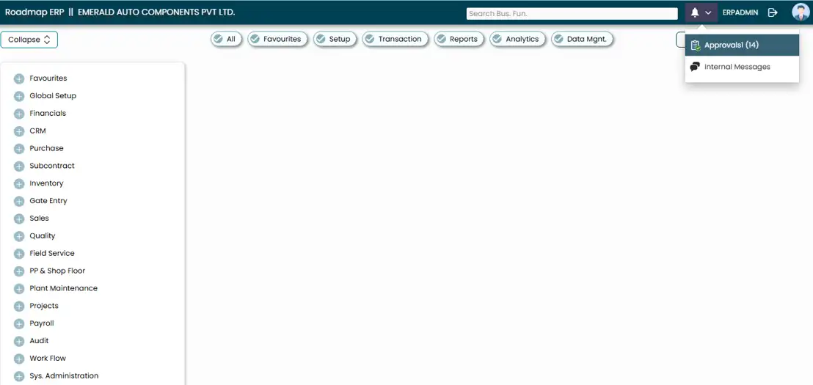
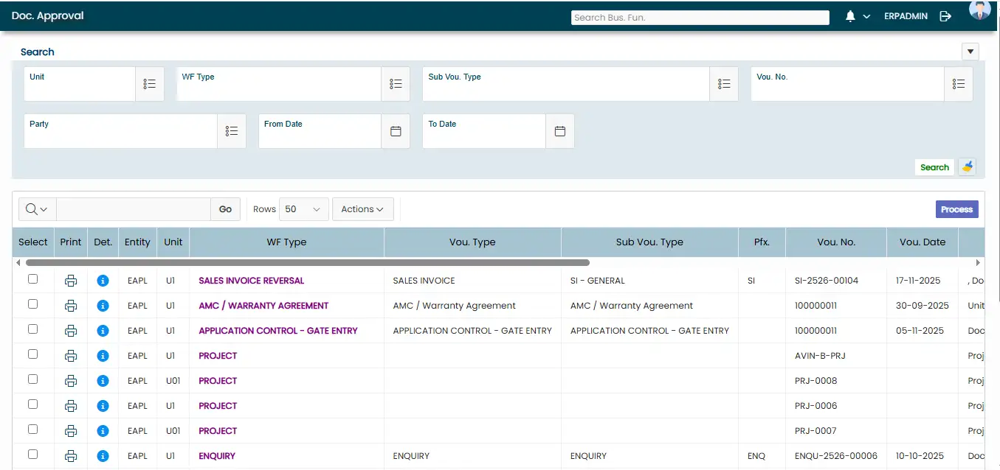
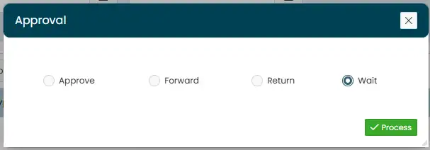

<div data-category="Operating Instructions" data-title="How to view Workflow" data-updated="December 01, 2025" data-contributors="RoadmapIT" data-breadcrumb="Home,Operating Instructions,How to view Workflow">
  <div class="page-content">
    <!-- View Workflow -->
    <h2>Go to approvals screen</h2>
    
    
    <ul style="list-style-type: none; align-content: center">
      <li class="mouse-icon">All workflow activities such as Approve, Forward, and Return can be performed from this screen.</li>
      <li class="mouse-icon">Click on the Process button to carry out the required workflow action.</li>
    </ul>
    
  </div>
</div>